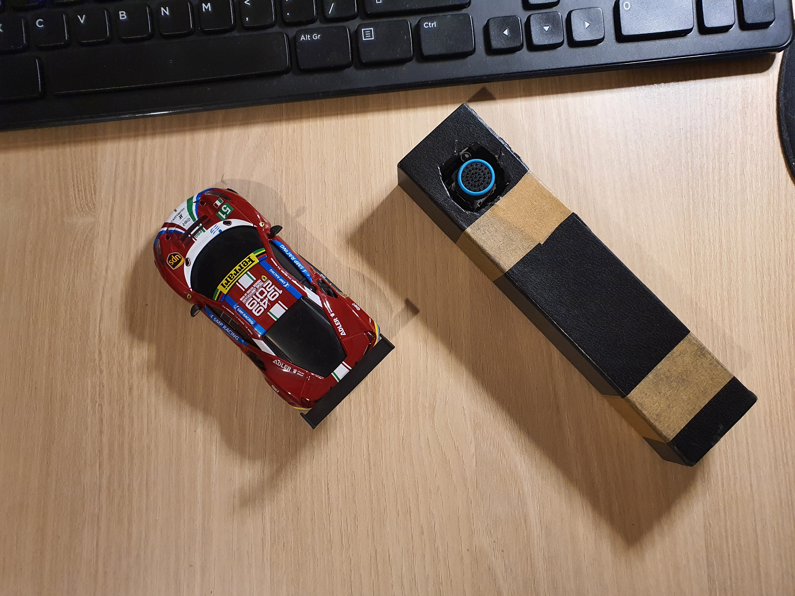

B-burago Ble joystick
Въведение
С този малък проект се постига прехвърляне управлението на колички B-burago от смартфон към ръчно направен джойстик, с цел по-добър контрол. Подходящ и за деца без смартфони, даваш им джойстика без да се чудуш дали ще ти счупят телефона.

Може директно да се изтегли кода, но това е документация така, че аз ще премина през всички стъпки:
- Предварително инсталирани програми и нужен хардуер
- Arduino IDE със добавен plugin за контролер ESP32
- смартфон
- nRF52840 Ble донгъл (не е задължителен)
- ESP32devKit или ESP32-101-board
- Инсталиране на допълнителен софтуер за прихващане на данни по Ble мрежата
- Инсталиране на WireShark
- Инсталиране на plugin за nRF52840
- Инсталиране на nRFConnect за андроид
- Кратко запознанство с Ble протокола
- Използване на nRFConnect за анрдоид
- свързване към количка
- Прихващане на данни чрез WireShark и nRF52840
- стартиране на WireShark и работа с Ble адаптер